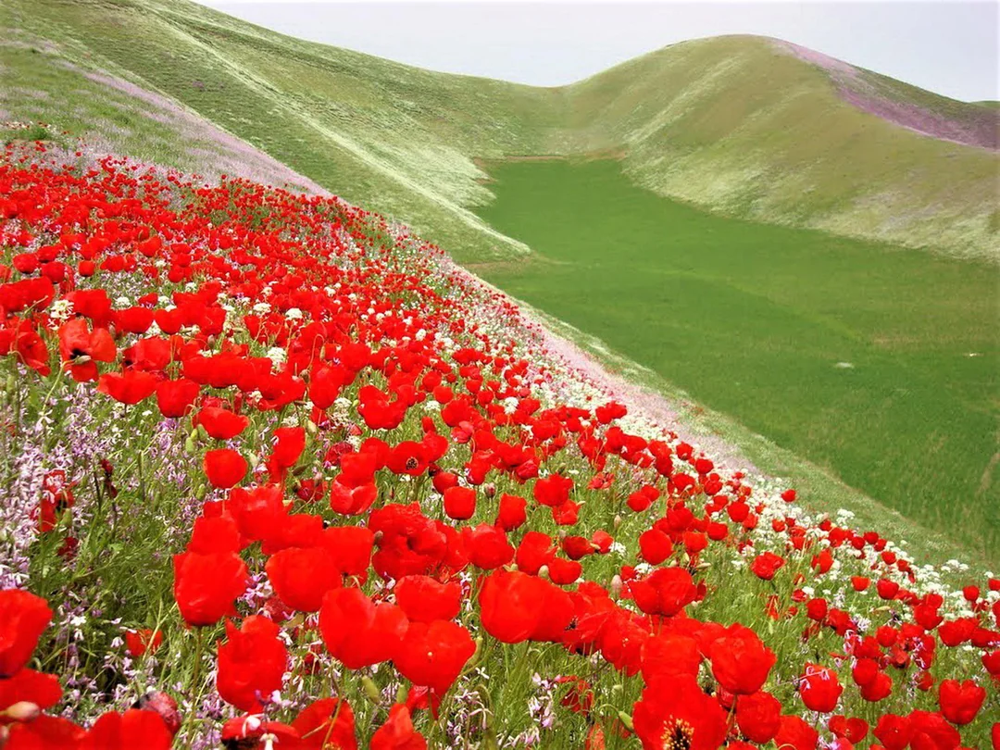
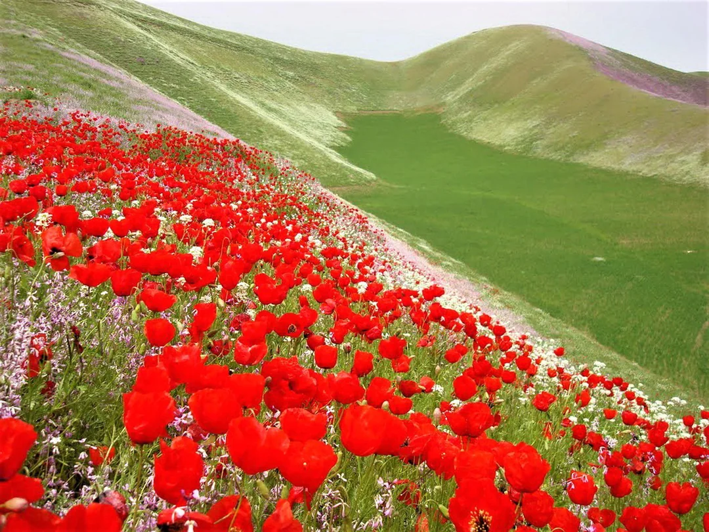

🌐Faryab Gallery
Faryab is a northern province of Afghanistan, celebrated for its fertile valleys, historic trade routes, and cultural diversity. Its capital, Maymana, has long been a hub of commerce and tradition, connecting communities across Central Asia. The province is home to many ethnic groups, reflecting Afghanistan’s rich social fabric. Known as the birthplace of the philosopher al‑Farabi, Faryab carries a legacy of learning and scholarship. Today, it remains a land of resilience, where agriculture, crafts, and scenic landscapes continue to shape daily life.


 
